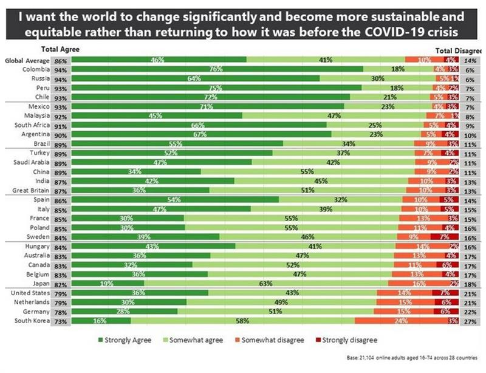
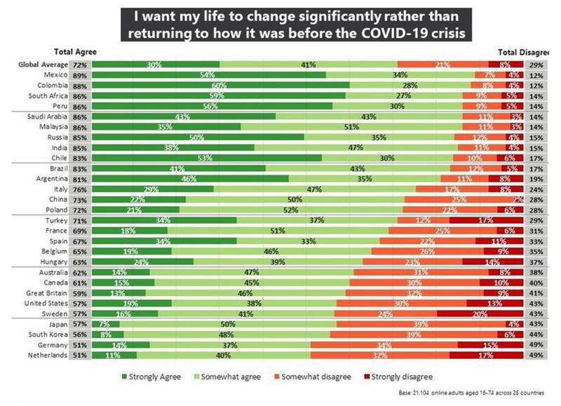
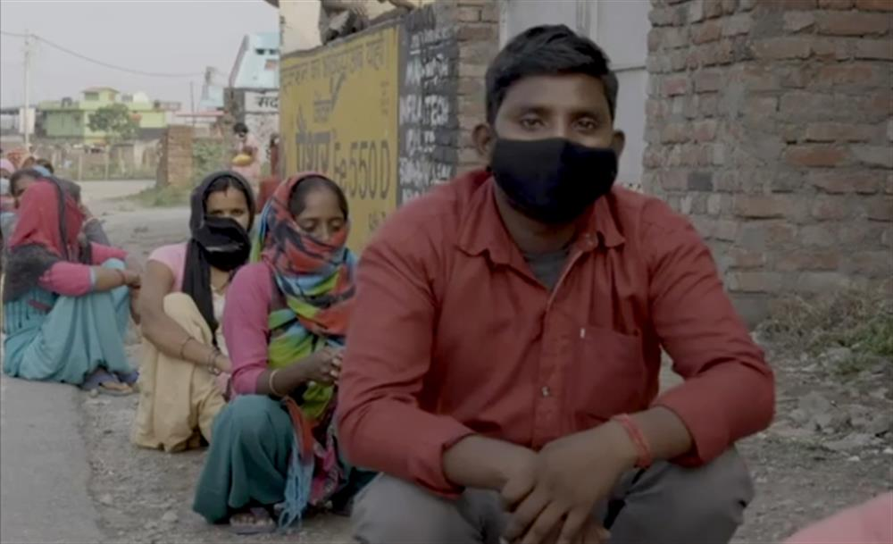
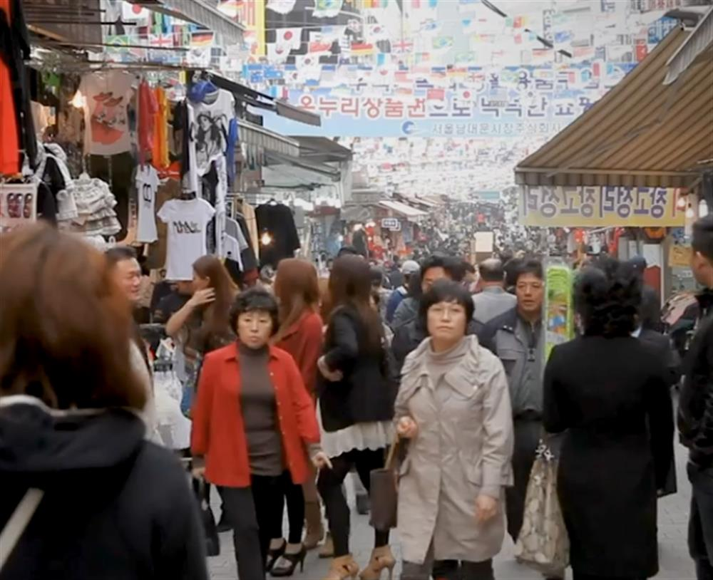

Published
16 Sep 2020
2020
Amanda Russo, Public Engagement, World Economic Forum, [email protected], +41 79 392 6898
Gayle Markovitz, Public Engagement, World Economic Forum, [email protected] +41 79 749 9251
- In a new World Economic Forum/Ipsos global survey of more than 21’000 adults, 86% say they want the world to change significantly and become more sustainable and equitable.
- Globally, 72% also want their personal lives to change significantly, rather than returning to pre-COVID-19.
- While the US is one of the most change-averse nations, alongside the Netherlands, Germany and South Korea, there is still a clear majority in favour of change at 79%.
- The COVID-19 crisis has broken down cultural barriers, giving way to significant social momentum towards systemic change for a more sustainable and equitable world.
- Findings are shared ahead of the 4th annual Sustainable Development Impact Summit and can be viewed in detail here.
Geneva, 16 September 2020 — In a new World Economic Forum-Ipsos survey of more than 21,000 adults from 28 countries nearly nine in ten say they are ready for their life and the world to change.
72% would like their own lives to change significantly and 86% want the world to become more sustainable and equitable, rather than going back to how it was before the COVID-19 crisis started. In all countries, those who share this view outnumber those who don’t by a very significant margin (more than 50 percentage points in every country except South Korea). Preference for the world to change in a more sustainable and equitable manner is most prevalent across the Latin America and Middle East-Africa regions as well as in Russia and Malaysia.
Next week’s World Economic Forum Sustainable Development Impact Summit will address the achievement of the sustainable development goals and the appetite for transformation which will drive the “decade of delivery”.
Clear majority ready for a more sustainable and equitable world
Globally, 86% of all adults surveyed agree that, “I want the world to change significantly and become more sustainable and equitable rather than returning to how it was before the COVID-19”. Of those, 46% strongly agree and 41% somewhat agree, while 14% disagree (10% somewhat and 4% strongly).
Russia and Colombia top the list of countries that strongly or somewhat agree with that statement at 94%. They are followed by Peru (93%) Mexico (93%) Chile (93%) Malaysia (92%), South Africa (91%) Argentina (90%) and Saudi Arabia (89%). The countries that are most change averse – disagreeing somewhat or strongly disagreeing with the statement – are South Korea (27%), Germany (22%), Netherlands (21%), US (21%) and Japan (18%).

Dominic Waughray, Managing Director, at the World Economic Forum said, “The Great Reset is the task of overhauling our global systems to become more equitable and sustainable, and it is more urgent than ever as COVID-19 has exposed the world’s critical vulnerabilities. But the technology to transform things tends to outpace the human will to change. In six months, the pandemic has systematically broken down this cultural barrier and we are now at a pivot point where we can use the social momentum of this crisis to avert the next one.”
Ready for significant personal change
Across all 28 countries, 72% want their lives to change significantly rather than returning to what it was like before the COVID-19 crisis (30% strongly and 41% somewhat) while the other 29% disagree (21% strongly and 8% somewhat).
Latin America stands out for its optimism, withMexico, Colombia and Peru in the top five countries strongly or somewhat agreeing. Agreement is also high South Africa (86%), Saudi Arabia (86%, Malaysia (86%) and India (85%). By contrast, at least two out of five adults in the Netherlands, Germany, South Korea, Japan, Sweden, the US, UK and Canada long for their life to just return to how it was before the pandemic.

Methodology These are the results of a 28-country survey conducted by Ipsos on its Global Advisor online platform. Ipsos interviewed a total of 21,104 adults aged 18-74 in United States, Canada, Malaysia, South Africa, and Turkey, and 16-74 in 23 other countries between August 21 and September 4, 2020. Where results do not sum to 100 or the ‘difference’ appears to be +/-1 more/less than the actual, this may be due to rounding, multiple responses or the exclusion of don't knows or not stated responses.


About Ipsos
www.ipsos.com
Ipsos is the world’s third largest market research company, present in 90 markets and employing more than 18,000 people. Founded in France in 1975, Ipsos has been listed on the Euronext Paris since 1 July 1999. The company is part of the SBF 120 and the Mid-60 index and is eligible for the Deferred Settlement Service (SRD).
Note to Editors Learn more about the Sustainable Development Impact Summit
Sign-up for media accreditation
See more about the Survey here
Explore the Forum’s Strategic Intelligence Platform and Transformation Maps
Learn about the Forum’s impact
Forum Agenda (also in French | Spanish | Mandarin | Japanese)
Forum videos | photos
Subscribe to News releases and Podcast
Facebook | Twitter | Instagram | LinkedIn | TikTok | Weibo | Podcasts
SOURCE: WORLD ECONOMIC FORUM